Code
library(tidyverse)
library(tidymodels)
# library(lubridate)
library(vip)Chun Su
January 23, 2022
Load required libraries
Data README is available at here.
chocolate_raw <- tuesdata$chocolate
chocolate_raw <- chocolate_raw %>%
mutate(cocoa_percent = parse_number(cocoa_percent)) %>%
separate(ingredients, c("ingredient_num","ingredients"), sep="-") %>%
mutate(
ingredient_num=parse_number(ingredient_num),
ingredients=str_trim(ingredients)
) %>%
mutate(ingredients = map(ingredients, ~str_split(.x, ",")[[1]])) %>%
mutate(most_memorable_characteristics=map(most_memorable_characteristics, ~str_split(.x,",")[[1]])) %>%
mutate(most_memorable_characteristics=map(most_memorable_characteristics, ~str_trim(.x))) %>%
# select(cocoa_percent, ingredient_num, ingredients, most_memorable_characteristics) %>%
I()using unnest to spread out the list column ingredients.
gredients <- chocolate_raw %>%
mutate(line_n = row_number()) %>%
select(line_n, ingredients) %>%
unnest(cols=c(ingredients)) %>%
mutate(tmp=1) %>%
pivot_wider(names_from=ingredients, values_from=tmp) %>%
select(-"NA") %>%
janitor::clean_names() %>%
mutate_at(vars(-line_n), ~ifelse(is.na(.x),0,.x)) %>%
I()most_memorable_characteristics <- chocolate_raw %>%
mutate(line_n = row_number()) %>%
select(line_n, most_memorable_characteristics) %>%
unnest(cols=c(most_memorable_characteristics)) %>%
mutate(tmp=1) %>%
# distinct(most_memorable_characteristics) %>%
# pivot_wider(names_from=most_memorable_characteristics, values_from=tmp) %>%
I()There are 972 most_memorable_characteristics in total
most_memorable_characteristics %>%
# mutate(most_memorable_characteristics = fct_lump_min(most_memorable_characteristics, min=100)) %>%
group_by(most_memorable_characteristics) %>%
count(sort=T) %>%
head(20) %>%
ggplot(aes(x=n, y=reorder(most_memorable_characteristics,n))) +
geom_col() +
geom_text(aes(label=n), color="white", hjust=1) +
theme_bw() +
labs(x="# of chocolates", y="most memorable characteristics")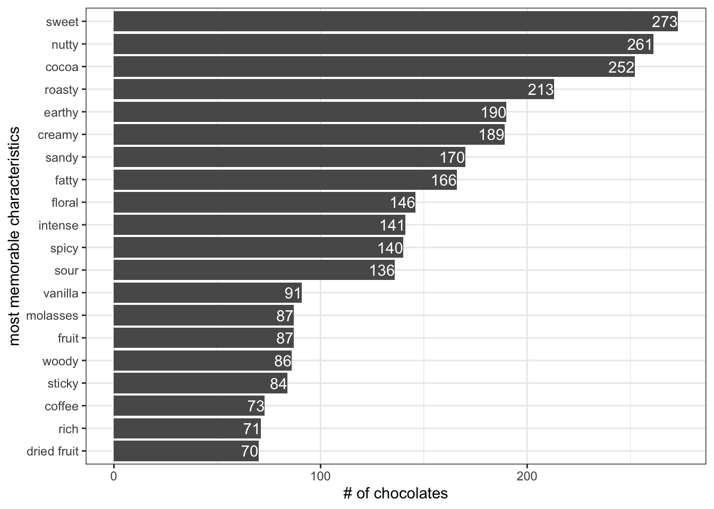
Pick top 12 most_memorable_characteristics to convert to boolean column
most_memorable_characteristics <- most_memorable_characteristics %>%
mutate(most_memorable_characteristics = fct_lump_min(most_memorable_characteristics, min=100)) %>%
distinct() %>%
pivot_wider(names_from=most_memorable_characteristics, values_from=tmp) %>%
mutate_at(vars(-line_n), ~ifelse(is.na(.x),0,.x))Several features are explored in terms of their association with rating.
country_of_bean_origin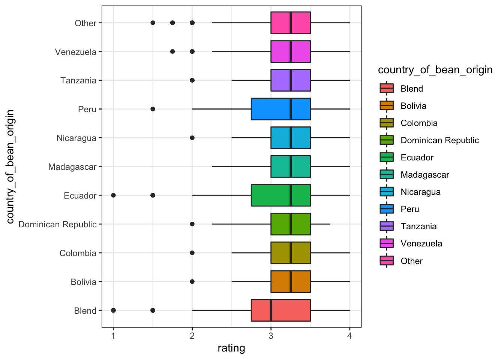
Blend and non-blend on country_of_bean_origin shows big difference, thus we convert country_of_bean_origin to country_of_bean_origin_blend
company_manufacturer and company_location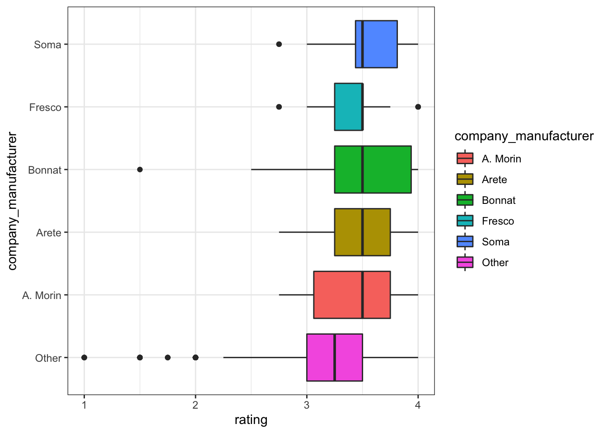
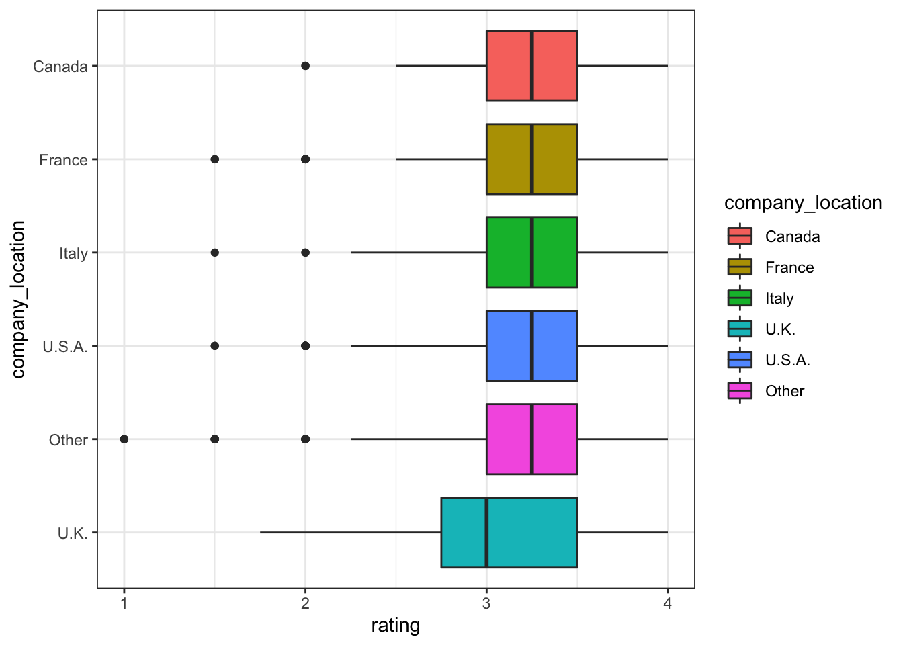
cocoa_percent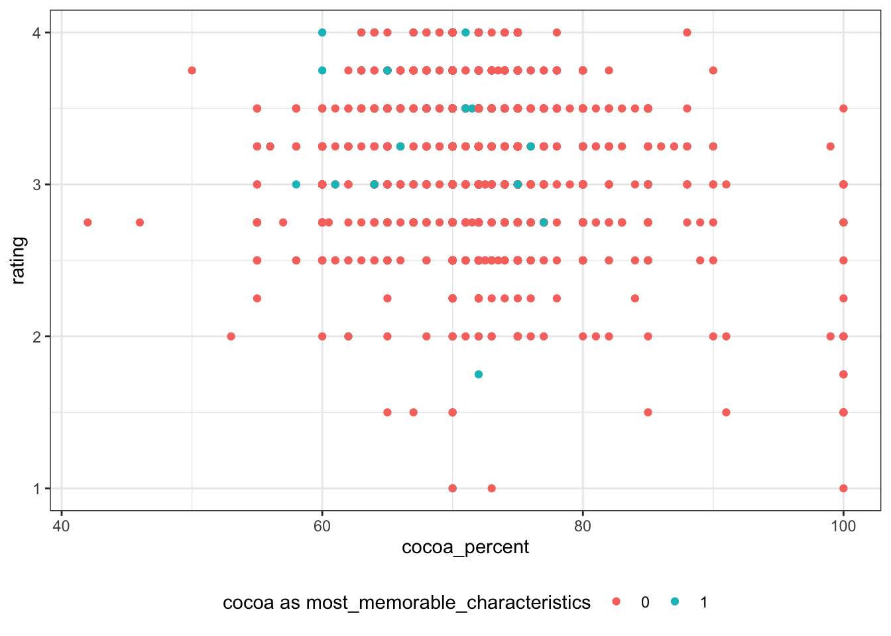
rating is not as continuous as what i originally imagined. Thus, I convert rating to nominal variable rating_bl using 3 as threshold
# A tibble: 2 × 2
# Groups: rating_bl [2]
rating_bl n
<chr> <int>
1 < 3 566
2 >=3 1964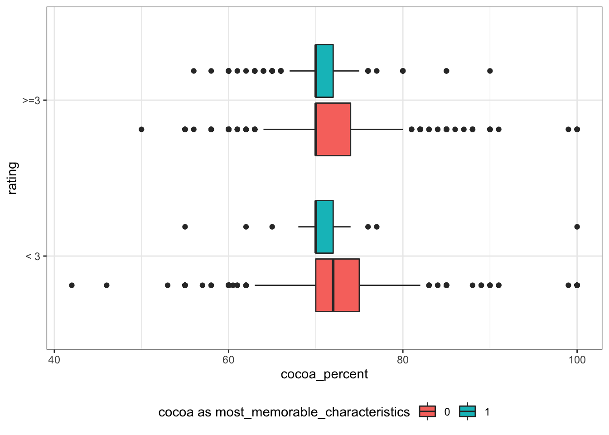
most_memorable_characteristics like cocoa and creamy positive effect rating, while fatty, earthy, sandy, sour and sweet negatively effect rating.
chocolate_clean %>%
select(rating, fatty:creamy) %>%
pivot_longer(!rating, names_to="most_memorable_characteristics", values_to="yes") %>%
ggplot(aes(y=reorder(most_memorable_characteristics, rating, FUN=median), x=rating)) +
geom_boxplot(aes(fill=yes)) +
theme_bw() +
theme(
legend.position = "bottom"
) +
scale_fill_discrete(labels = c("0"="No", "1"="Yes")) +
labs(y="most_memorable_characteristics", fill="is most_memorable_characteristics?") +
NULL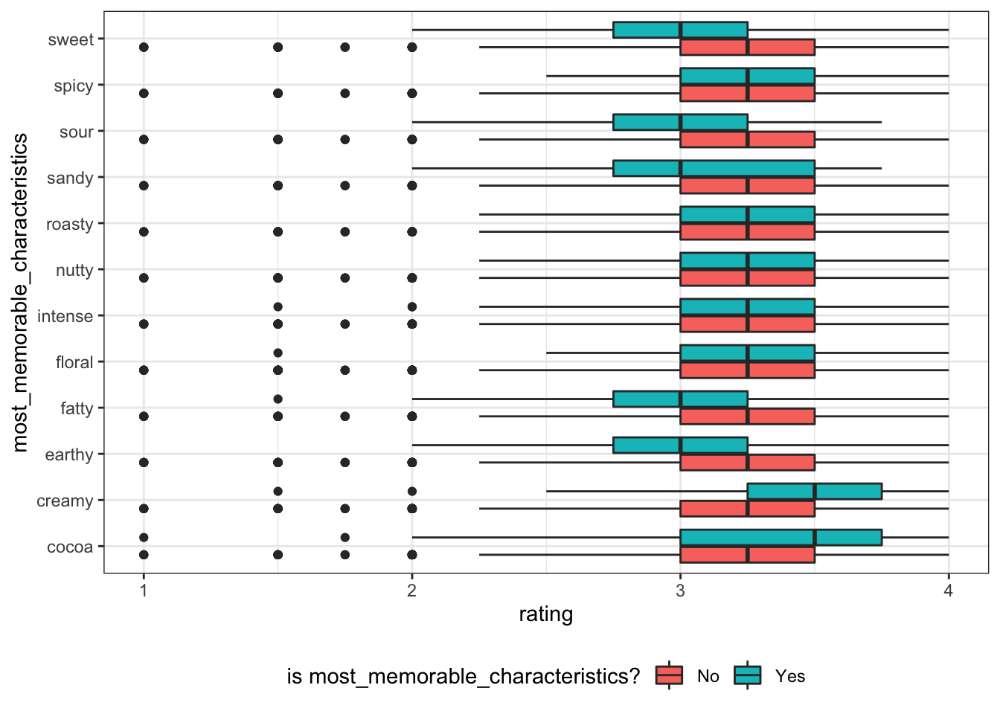
ingredient number ingredient_num between 2-3 are associated with higher rating.
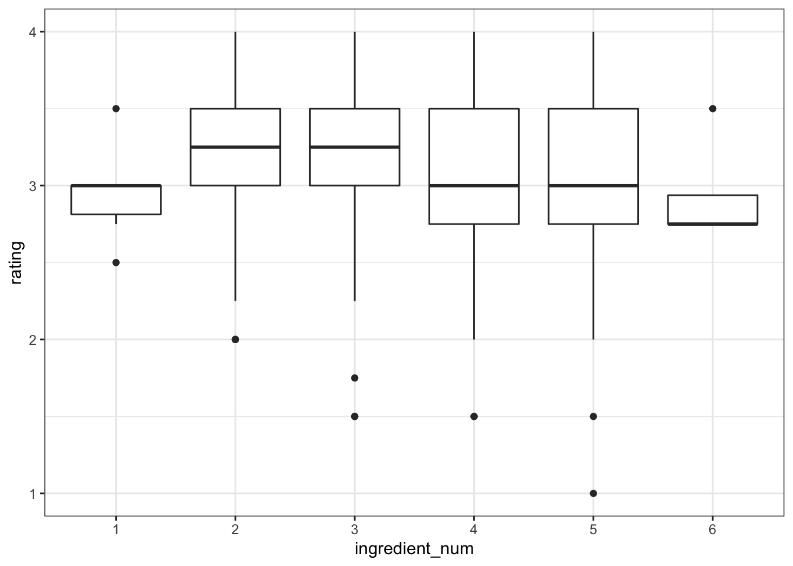
ingrediants like beans and sugar positively effect rating, while vanilla, sweeter and salt negatively effect rating.
chocolate_clean %>%
select(rating, contains("igrdt_")) %>%
pivot_longer(!rating, names_to="ingredients", values_to="yes") %>%
mutate(ingredients = gsub("igrdt_","",ingredients)) %>%
ggplot(aes(y=reorder(ingredients, rating, FUN=median), x=rating)) +
geom_boxplot(aes(fill=yes)) +
theme_bw() +
theme(
legend.position = "bottom"
) +
scale_fill_discrete(labels = c("0"="No", "1"="Yes")) +
labs(y="ingredients", fill="contain the ingredient?") +
NULL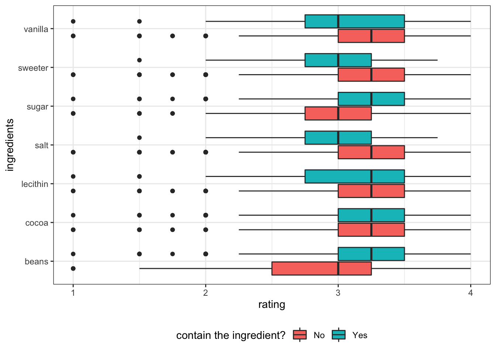
Based on the exploratory analysis, to study the effect on overall rating of chocolates, the following features are selected for building ML models. Plus, using nominal feature rating_bl instead of numeric feature rating as outcome.
initial_split# 10-fold cross-validation
# A tibble: 10 × 2
splits id
<list> <chr>
1 <split [1647/184]> Fold01
2 <split [1648/183]> Fold02
3 <split [1648/183]> Fold03
4 <split [1648/183]> Fold04
5 <split [1648/183]> Fold05
6 <split [1648/183]> Fold06
7 <split [1648/183]> Fold07
8 <split [1648/183]> Fold08
9 <split [1648/183]> Fold09
10 <split [1648/183]> Fold10chocolate_rec <-
recipe(rating_bl ~ ., data = chocolate_train) %>%
step_other(company_manufacturer, threshold=0.01, other="otherCompany") %>%
# step_mutate_at(c("company_manufacturer","country_of_bean_origin_blend", "rating_bl"), fn = ~as.factor(.x)) %>%
step_dummy(all_nominal_predictors()) %>%
step_zv(all_predictors())
chocolate_recRecipe
Inputs:
role #variables
outcome 1
predictor 16
Operations:
Collapsing factor levels for company_manufacturer
Dummy variables from all_nominal_predictors()
Zero variance filter on all_predictors()check preprocessed data.frame
# A tibble: 1,831 × 20
cocoa_percent ingre…¹ ratin…² compa…³ compa…⁴ compa…⁵ compa…⁶ compa…⁷ count…⁸
<dbl> <dbl> <fct> <dbl> <dbl> <dbl> <dbl> <dbl> <dbl>
1 70 4 < 3 0 0 0 0 0 1
2 70 4 < 3 0 0 0 0 0 1
3 60 3 < 3 0 0 0 0 1 1
4 70 2 < 3 0 0 0 0 1 1
5 70 2 < 3 0 0 0 0 1 1
6 75 4 < 3 0 0 0 0 1 1
7 75 4 < 3 0 0 0 0 1 1
8 75 5 < 3 0 0 0 0 1 1
9 75 5 < 3 0 0 0 0 1 1
10 65 6 < 3 0 0 0 0 1 1
# … with 1,821 more rows, 11 more variables: igrdt_sugar_X1 <dbl>,
# igrdt_vanilla_X1 <dbl>, igrdt_salt_X1 <dbl>, igrdt_sweeter_X1 <dbl>,
# cocoa_X1 <dbl>, creamy_X1 <dbl>, fatty_X1 <dbl>, earthy_X1 <dbl>,
# sandy_X1 <dbl>, sour_X1 <dbl>, sweet_X1 <dbl>, and abbreviated variable
# names ¹ingredient_num, ²rating_bl, ³company_manufacturer_Arete,
# ⁴company_manufacturer_Bonnat, ⁵company_manufacturer_Fresco,
# ⁶company_manufacturer_Soma, ⁷company_manufacturer_otherCompany, …
# ℹ Use `print(n = ...)` to see more rows, and `colnames()` to see all variable namesboost_treeDetails about boost_tree can be found https://parsnip.tidymodels.org/reference/details_boost_tree_xgboost.html
require library xgboost installed.
grid_max_entropy, grid_regular, grid_random can be used for quickly specify levels for tuned hyperparameters.
be aware that mtry usually requires range parameters, it usually contains the sqrt(predictor_num)
# A tibble: 25 × 2
mtry min_n
<int> <int>
1 3 2
2 4 2
3 6 2
4 8 2
5 10 2
6 3 11
7 4 11
8 6 11
9 8 11
10 10 11
# … with 15 more rows
# ℹ Use `print(n = ...)` to see more rows══ Workflow ════════════════════════════════════════════════════════════════════
Preprocessor: Recipe
Model: boost_tree()
── Preprocessor ────────────────────────────────────────────────────────────────
3 Recipe Steps
• step_other()
• step_dummy()
• step_zv()
── Model ───────────────────────────────────────────────────────────────────────
Boosted Tree Model Specification (classification)
Main Arguments:
mtry = tune()
min_n = tune()
Computational engine: xgboost user system elapsed
30.965 0.215 31.417 xg_res %>%
collect_metrics() %>%
ggplot(aes(x = min_n, y=mean, color=as.factor(mtry))) +
facet_wrap(~.metric, scales="free") +
geom_point() +
geom_line(aes(group=as.factor(mtry))) +
theme_bw() +
labs(y="metrics estimate", x='minimum number of data points in a node (min_n)', color='the number of predictors that will be randomly sampled (mtry)') +
theme(legend.position = "bottom")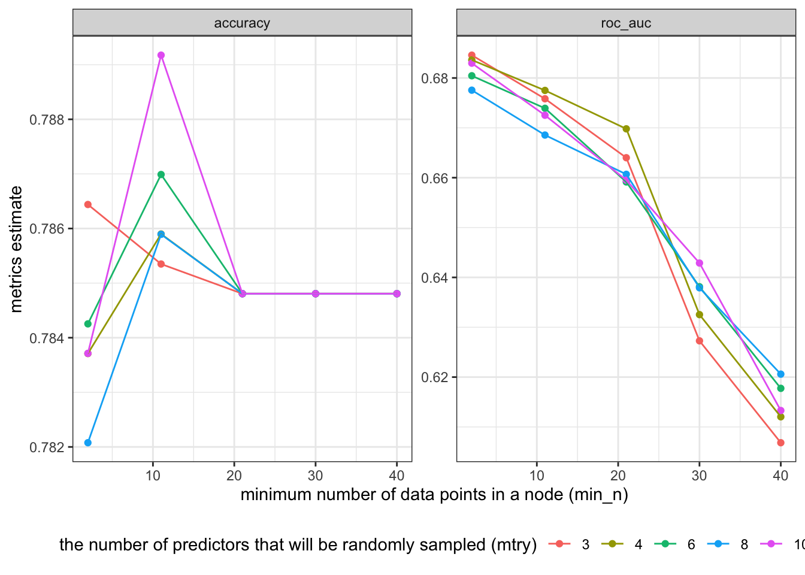
show_best(metric = ) allows to see the top 5 from xg_res %>% collect_metrics()
select_best, select_by_pct_loss, select_by_one_std_err select hyperparameters and corresponding .config to a tibble.
# A tibble: 1 × 3
mtry min_n .config
<int> <int> <chr>
1 10 11 Preprocessor1_Model10finalize model using selected hyperparameters
══ Workflow ════════════════════════════════════════════════════════════════════
Preprocessor: Recipe
Model: boost_tree()
── Preprocessor ────────────────────────────────────────────────────────────────
3 Recipe Steps
• step_other()
• step_dummy()
• step_zv()
── Model ───────────────────────────────────────────────────────────────────────
Boosted Tree Model Specification (classification)
Main Arguments:
mtry = 10
min_n = 11
Computational engine: xgboost last_fit modellast_fit(split)# Resampling results
# Manual resampling
# A tibble: 1 × 6
splits id .metrics .notes .predictions .workflow
<list> <chr> <list> <list> <list> <list>
1 <split [1831/612]> train/test split <tibble> <tibble> <tibble> <workflow>collect_metrics for overall data# A tibble: 2 × 4
.metric .estimator .estimate .config
<chr> <chr> <dbl> <chr>
1 accuracy binary 0.786 Preprocessor1_Model1
2 roc_auc binary 0.668 Preprocessor1_Model1metrics are comparable to training data, so not overfiting.
collect_predictions for test data# A tibble: 612 × 7
id `.pred_< 3` `.pred_>=3` .row .pred_class rating_bl .config
<chr> <dbl> <dbl> <int> <fct> <fct> <chr>
1 train/test split 0.141 0.859 3 >=3 >=3 Preproc…
2 train/test split 0.125 0.875 10 >=3 < 3 Preproc…
3 train/test split 0.0668 0.933 11 >=3 < 3 Preproc…
4 train/test split 0.156 0.844 17 >=3 >=3 Preproc…
5 train/test split 0.0668 0.933 24 >=3 >=3 Preproc…
6 train/test split 0.0668 0.933 25 >=3 >=3 Preproc…
7 train/test split 0.0711 0.929 32 >=3 >=3 Preproc…
8 train/test split 0.236 0.764 42 >=3 < 3 Preproc…
9 train/test split 0.491 0.509 46 >=3 < 3 Preproc…
10 train/test split 0.385 0.615 55 >=3 < 3 Preproc…
# … with 602 more rows
# ℹ Use `print(n = ...)` to see more rowsroc_auc and roc_curve on test datacalculate roc_auc manually on test data
# A tibble: 1 × 3
.metric .estimator .estimate
<chr> <chr> <dbl>
1 roc_auc binary 0.668plot roc_curve
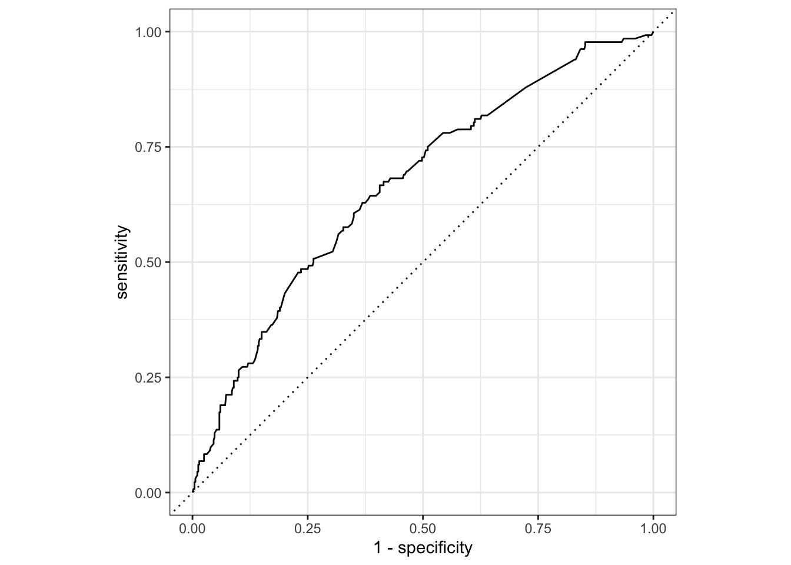
extract_workflow() to save final_trained_wf══ Workflow [trained] ══════════════════════════════════════════════════════════
Preprocessor: Recipe
Model: boost_tree()
── Preprocessor ────────────────────────────────────────────────────────────────
3 Recipe Steps
• step_other()
• step_dummy()
• step_zv()
── Model ───────────────────────────────────────────────────────────────────────
##### xgb.Booster
raw: 21.7 Kb
call:
xgboost::xgb.train(params = list(eta = 0.3, max_depth = 6, gamma = 0,
colsample_bytree = 1, colsample_bynode = 0.526315789473684,
min_child_weight = 11L, subsample = 1, objective = "binary:logistic"),
data = x$data, nrounds = 15, watchlist = x$watchlist, verbose = 0,
nthread = 1)
params (as set within xgb.train):
eta = "0.3", max_depth = "6", gamma = "0", colsample_bytree = "1", colsample_bynode = "0.526315789473684", min_child_weight = "11", subsample = "1", objective = "binary:logistic", nthread = "1", validate_parameters = "TRUE"
xgb.attributes:
niter
callbacks:
cb.evaluation.log()
# of features: 19
niter: 15
nfeatures : 19
evaluation_log:
iter training_logloss
1 0.6020652
2 0.5525599
---
14 0.4693209
15 0.4688216extract_* information from final_trained_wf
extract_fit_engine() is engine-specific model##### xgb.Booster
raw: 21.7 Kb
call:
xgboost::xgb.train(params = list(eta = 0.3, max_depth = 6, gamma = 0,
colsample_bytree = 1, colsample_bynode = 0.526315789473684,
min_child_weight = 11L, subsample = 1, objective = "binary:logistic"),
data = x$data, nrounds = 15, watchlist = x$watchlist, verbose = 0,
nthread = 1)
params (as set within xgb.train):
eta = "0.3", max_depth = "6", gamma = "0", colsample_bytree = "1", colsample_bynode = "0.526315789473684", min_child_weight = "11", subsample = "1", objective = "binary:logistic", nthread = "1", validate_parameters = "TRUE"
xgb.attributes:
niter
callbacks:
cb.evaluation.log()
# of features: 19
niter: 15
nfeatures : 19
evaluation_log:
iter training_logloss
1 0.6020652
2 0.5525599
---
14 0.4693209
15 0.4688216extract_fit_parsnip() is parsnip model objectparsnip model object
##### xgb.Booster
raw: 21.7 Kb
call:
xgboost::xgb.train(params = list(eta = 0.3, max_depth = 6, gamma = 0,
colsample_bytree = 1, colsample_bynode = 0.526315789473684,
min_child_weight = 11L, subsample = 1, objective = "binary:logistic"),
data = x$data, nrounds = 15, watchlist = x$watchlist, verbose = 0,
nthread = 1)
params (as set within xgb.train):
eta = "0.3", max_depth = "6", gamma = "0", colsample_bytree = "1", colsample_bynode = "0.526315789473684", min_child_weight = "11", subsample = "1", objective = "binary:logistic", nthread = "1", validate_parameters = "TRUE"
xgb.attributes:
niter
callbacks:
cb.evaluation.log()
# of features: 19
niter: 15
nfeatures : 19
evaluation_log:
iter training_logloss
1 0.6020652
2 0.5525599
---
14 0.4693209
15 0.4688216extract_recipe or extract_preprocessing to get recipe/preprocessingvip() plot top 10vi_model() return tibblerating to categorical rating using threshold because, based on the exploratory analysis, the rating values are not continuous.boost_tree did not produce good estimate for the data.
rand_forest(), logistic_reg and svm_linear are worth to try.tree_depth, learning_rate and trees are worth to try. I don’t know which tune-able hyperparameter corresponds to regularization gamma.rand_forest() and svm_linear training rating as linear model on the same dataset.